JEE Main 2024 (Session 2), 9 Apr Shift 1: worked solutions for review
Questions and options are NTA’s own images; the green option is NTA’s final key. Every solution below was written by Claude
and checked against NTA’s final key. It is not NTA’s solution. Please mark anything unclear or wrong.
Q1 · Mathematics · MCQ · ID 87827056148
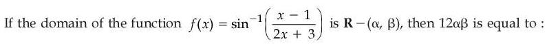
Hint 1: sin−1 needs its input between −1 and 1.
Hint 2: |x − 1| ≤ |2x + 3|: square both sides.
What this tests: Domain of inverse trigonometric functions
1. (x − 1)2 ≤ (2x + 3)2 gives 3x2 + 14x + 8 ≥ 0, roots −4 and −2/3.
2. Domain R − (−4, −2/3).
3. 12αβ = 12 × 8/3 = 32.
Answer: (2)
If this felt hard: Revise Inverse Trigonometric Functions.
Claude’s answer: 2 · NTA final key: 2 · agrees · Answer recomputed with SymPy (tools/verify_pyq_solutions.py)
Q2 · Mathematics · MCQ · ID 87827056149
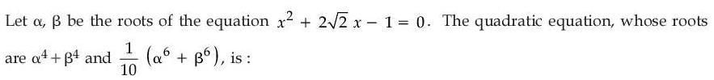
Hint 1: Build α2 + β2 first from the sum and product.
Hint 2: α2 + β2 = 10, α2β2 = 1.
What this tests: Symmetric functions of roots
1. α4 + β4 = 100 − 2 = 98.
2. α6 + β6 = 1000 − 3 × 10 = 970; divided by 10: 97.
3. Sum 195, product 9506.
Answer: (3)
If this felt hard: Revise Quadratic Equations.
Claude’s answer: 3 · NTA final key: 3 · agrees · Answer recomputed with SymPy (tools/verify_pyq_solutions.py)
Q3 · Mathematics · MCQ · ID 87827056150
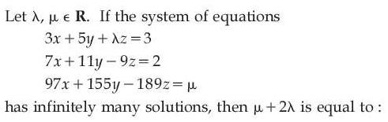
(2) 
(3) 
(4) 
Hint 1: Infinitely many solutions: coefficient determinant = 0, and row 3 must be a combination of rows 1 and 2.
Hint 2: det = 198 + 18λ.
What this tests: Linear systems
1. λ = −11.
2. Row 3 = 9 × row 1 + 10 × row 2 (check: 9(−11) + 10(−9) = −189).
3. μ = 9 × 3 + 10 × 2 = 47; μ + 2λ = 25.
Answer: (3)
If this felt hard: Revise Determinants.
Claude’s answer: 3 · NTA final key: 3 · agrees · Answer recomputed with SymPy (tools/verify_pyq_solutions.py)
Q4 · Mathematics · MCQ · ID 87827056151
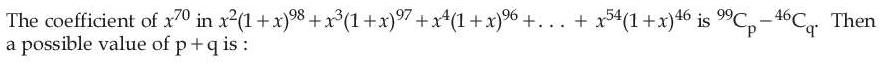
Hint 1: The coefficient of x70 in xk(1 + x)100−k is C(100 − k, 30).
Hint 2: Use the hockey-stick identity Σ C(m, 30) = C(n + 1, 31).
What this tests: Binomial coefficient sums
1. Sum = Σm=4698 C(m, 30) = C(99, 31) − C(46, 31).
2. p = 31 or 68, q = 31 or 15.
3. p + q = 83 (68 + 15) is an option.
Answer: (2)
If this felt hard: Revise Binomial Theorem.
Claude’s answer: 2 · NTA final key: 2 · agrees · Answer recomputed with SymPy (tools/verify_pyq_solutions.py)
Q5 · Mathematics · MCQ · ID 87827056152
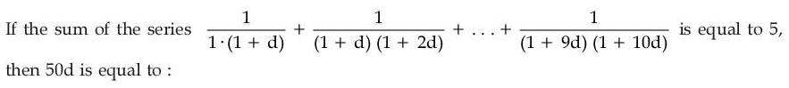
(1) 
(3) 
(4) 
Hint 1: Split each term into partial fractions.
Hint 2: 1/((1 + kd)(1 + (k+1)d)) = (1/d)(1/(1 + kd) − 1/(1 + (k+1)d)).
What this tests: Telescoping series
1. Sum = (1/d)(1 − 1/(1 + 10d)) = 10/(1 + 10d) = 5.
2. d = 1/10, 50d = 5.
Answer: (1)
If this felt hard: Revise Sequences and Series.
Claude’s answer: 1 · NTA final key: 1 · agrees · Answer recomputed with SymPy (tools/verify_pyq_solutions.py)
Q6 · Mathematics · MCQ · ID 87827056153
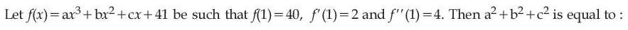
(2) 
Hint 1: Write the three conditions as equations in a, b, c.
Hint 2: 6a + 2b = 4, 3a + 2b + c = 2, a + b + c = −1.
What this tests: Derivatives of polynomials
1. a = −1, b = 5, c = −5.
2. a2 + b2 + c2 = 51.
Answer: (1)
If this felt hard: Revise Continuity and Differentiability.
Claude’s answer: 1 · NTA final key: 1 · agrees · Answer recomputed with SymPy (tools/verify_pyq_solutions.py)
Q7 · Mathematics · MCQ · ID 87827056154
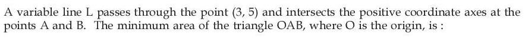
(1) 
(2) 
(3) 
(4) 
Hint 1: Line x/a + y/b = 1 through (3, 5). Minimise ab/2.
Hint 2: 3/a + 5/b = 1 and AM–GM: 1 ≥ 2√(15/(ab)).
What this tests: Straight lines and AM–GM
1. ab ≥ 60.
2. Minimum area = 30.
Answer: (4)
If this felt hard: Revise Straight Lines.
Claude’s answer: 4 · NTA final key: 4 · agrees · Answer recomputed with SymPy (tools/verify_pyq_solutions.py)
Q8 · Mathematics · MCQ · ID 87827056155
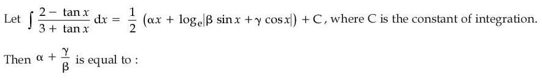
(1) 
(2) 
(3) 
(4) 
Hint 1: Write (2 − tan x)/(3 + tan x) = (2cos x − sin x)/(3cos x + sin x).
Hint 2: Numerator = A(denominator) + B(derivative of denominator).
What this tests: Integrals of (a sin x + b cos x)/(c sin x + d cos x)
1. A = B = 1/2.
2. Integral = x/2 + (1/2)ln|sin x + 3cos x|: α = 1, β = 1, γ = 3.
3. α + γ/β = 4.
Answer: (3)
If this felt hard: Revise Integrals.
Claude’s answer: 3 · NTA final key: 3 · agrees · Answer recomputed with SymPy (tools/verify_pyq_solutions.py)
Q9 · Mathematics · MCQ · ID 87827056156
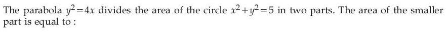
Hint 1: Find where the curves meet, then the part of the circle on the parabola's inner side.
Hint 2: Intersections (1, ±2).
What this tests: Area between curves
1. Area = 2[∫01 2√x dx + ∫1√5 √(5 − x2) dx].
2. = 2/3 + 5π/2 − 5sin−1(1/√5) = 2/3 + 5sin−1(2/√5) ≈ 6.2 (less than half of 5π).
Answer: (4)
If this felt hard: Revise Application of Integrals.
Claude’s answer: 4 · NTA final key: 4 · agrees · Answer recomputed with SymPy (tools/verify_pyq_solutions.py)
Q10 · Mathematics · MCQ · ID 87827056157
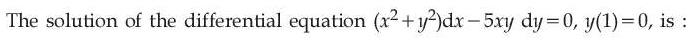
Hint 1: Homogeneous: put y = vx.
Hint 2: x dv/dx = (1 − 4v2)/(5v).
What this tests: Homogeneous differential equations
1. −(5/8) ln|1 − 4v2| = ln x + C; y(1) = 0 gives C = 0.
2. |1 − 4v2|5 = x−8, i.e. |x2 − 4y2|5 = x2.
Answer: (4)
If this felt hard: Revise Differential Equations.
Claude’s answer: 4 · NTA final key: 4 · agrees · Answer recomputed with SymPy (tools/verify_pyq_solutions.py)
Q11 · Mathematics · MCQ · ID 87827056158
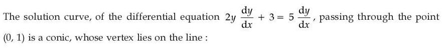
Hint 1: Separate variables: (2y − 5) dy = −3 dx.
Hint 2: y2 − 5y = −3x + C.
What this tests: Variable separable DE; parabola
1. (0, 1): C = −4.
2. (y − 5/2)2 = −3(x − 3/4): vertex (3/4, 5/2).
3. 2(3/4) + 3(5/2) = 9.
Answer: (1)
If this felt hard: Revise Differential Equations.
Claude’s answer: 1 · NTA final key: 1 · agrees · Answer recomputed with SymPy (tools/verify_pyq_solutions.py)
Q12 · Mathematics · MCQ · ID 87827056159
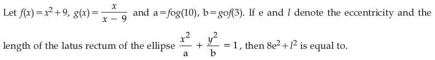
(1) 
(2) 
(3) 
(4) 
Hint 1: a = f(g(10)), b = g(f(3)).
Hint 2: g(10) = 10, f(10) = 109; f(3) = 18, g(18) = 2.
What this tests: Composite functions; ellipse
1. Ellipse x2/109 + y2/2 = 1.
2. e2 = 107/109, l = 4/√109.
3. 8e2 + l2 = (856 + 16)/109 = 8.
Answer: (3)
If this felt hard: Revise Conic Sections.
Claude’s answer: 3 · NTA final key: 3 · agrees · Answer recomputed with SymPy (tools/verify_pyq_solutions.py)
Q13 · Mathematics · MCQ · ID 87827056160
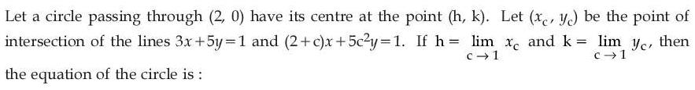
Hint 1: Solve the two lines for y in terms of c and cancel (c − 1).
Hint 2: yc = −1/(5(3c + 2)).
What this tests: Limits and circles
1. h = 2/5, k = −1/25.
2. r2 = (8/5)2 + (1/25)2.
3. 25x2 + 25y2 − 20x + 2y − 60 = 0.
Answer: (1)
If this felt hard: Revise Circles.
Claude’s answer: 1 · NTA final key: 1 · agrees · Answer recomputed with SymPy (tools/verify_pyq_solutions.py)
Q14 · Mathematics · MCQ · ID 87827056161
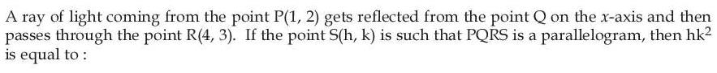
(1) 
Hint 1: Reflect P in the x-axis; the reflected ray lies on the line from P' to R.
Hint 2: P' = (1, −2).
What this tests: Reflection and parallelograms
1. Line P'R meets the x-axis at Q = (11/5, 0).
2. S = P + R − Q = (14/5, 5).
3. hk2 = 70.
Answer: (2)
If this felt hard: Revise Straight Lines.
Claude’s answer: 2 · NTA final key: 2 · agrees · Answer recomputed with SymPy (tools/verify_pyq_solutions.py)
Q15 · Mathematics · MCQ · ID 87827056162
(1)
(2)
(3)
(4)
Hint 1: Take general points on both lines; their difference must be parallel to (3, 1, 2).
Hint 2: L1: (2 + t, −t, 1 + t); L2: (−1 + s, 1 + s, −1 + 2s).
What this tests: Lines in 3D
1. t = −4/3, s = −1/3: L passes through (2/3, 4/3, −1/3).
2. L: (2/3 + 3m, 4/3 + m, −1/3 + 2m); m = −1/3 gives (−1/3, 1, −1).
Answer: (1)
If this felt hard: Revise Three Dimensional Geometry.
Claude’s answer: 1 · NTA final key: 1 · agrees · Answer recomputed with SymPy (tools/verify_pyq_solutions.py)
Q16 · Mathematics · MCQ · ID 87827056163
(1)
(2)
(3)
(4)
Hint 1: SD = |(a2 − a1)·(d1 × d2)|/|d1 × d2|.
Hint 2: d1 × d2 = (19, 11, 9).
What this tests: Shortest distance
1. |n|2 = 563; (2, 16, −3)·n = 187.
2. SD = 187/√563.
Answer: (4)
If this felt hard: Revise Three Dimensional Geometry.
Claude’s answer: 4 · NTA final key: 4 · agrees · Answer recomputed with SymPy (tools/verify_pyq_solutions.py)
Q17 · Mathematics · MCQ · ID 87827056164
(1) 
(2)
(3)
(4) 
Hint 1: Area of a quadrilateral = (1/2)|diagonal × diagonal|.
Hint 2: |OA × OC| = 6|a × b| = 15.
What this tests: Vector areas
1. OB × AC = (6a + 5b) × (3b − 2a) = 28(a × b).
2. Area = 14 × 5/2 = 35.
Answer: (2)
If this felt hard: Revise Vector Algebra.
Claude’s answer: 2 · NTA final key: 2 · agrees · Answer recomputed with SymPy (tools/verify_pyq_solutions.py)
Q18 · Mathematics · MCQ · ID 87827056165
(1) 
(2)
(3)
(4) 
Hint 1: Area of the triangle = (1/2)|a × b|.
Hint 2: a × b = (10, 10 − 4α, 3α − 20).
What this tests: Cross product
1. |a × b|2 = 600 gives 25α2 − 200α = 0, α = 8.
2. c = (3, 1, −2), |c|2 = 14.
Answer: (3)
If this felt hard: Revise Vector Algebra.
Claude’s answer: 3 · NTA final key: 3 · agrees · Answer recomputed with SymPy (tools/verify_pyq_solutions.py)
Q19 · Mathematics · MCQ · ID 87827056166
(1) 
(2)
(3)
(4) 
Hint 1: x + y = 10. Find the median from cumulative frequencies.
Hint 2: Median = 18.
What this tests: Mean deviation about the median
1. MD sum = 15 + 16 + 5 + 0 + x + 2y = 50, so x + 2y = 14.
2. y = 4, x = 6: 4x + 5y = 44.
Answer: (2)
If this felt hard: Revise Statistics.
Claude’s answer: 2 · NTA final key: 2 · agrees · Answer recomputed by script (tools/verify_pyq_solutions.py)
Q20 · Mathematics · MCQ · ID 87827056167
(1)
(2)
(3)
(4)
Hint 1: cos θ cos(60° − θ) cos(60° + θ) = cos 3θ/4.
Hint 2: |cos 3θ| ≤ 1/2, so the largest value is cos 3θ = 1/2.
What this tests: Trigonometric identities and equations
1. 3θ ∈ {π/3, 5π/3, 7π/3, 11π/3, 13π/3, 17π/3}.
2. Sum of 3θ = 18π, so sum of θ = 6π.
Answer: (1)
If this felt hard: Revise Trigonometry.
Claude’s answer: 1 · NTA final key: 1 · agrees · Answer recomputed with SymPy (tools/verify_pyq_solutions.py)
Q21 · Mathematics · Numerical · ID 87827056168
Hint 1: Count ordered pairs from A with each sum, and from B with each sum.
Hint 2: Elements of R = Σ NA(s) NB(s).
What this tests: Counting relations
1. Common sums: 8 (2 × 1), 9 (4 × 2), 10 (2 × 3), 12 (1 × 3), 13 (2 × 2), 14 (1 × 2).
2. Total 2 + 8 + 6 + 3 + 4 + 2 = 25.
Answer: 25
If this felt hard: Revise Relations and Functions.
Claude’s answer: 25 · NTA final key: 25 · agrees · Answer recomputed by script (tools/verify_pyq_solutions.py)
Q22 · Mathematics · Numerical · ID 87827056169
Hint 1: List integer points with |z − 1| ≤ 1, then apply the second condition.
Hint 2: |z − 5| ≤ |z − 5i| means y ≤ x.
What this tests: Loci in the complex plane
1. Points: 0, 1, 2, 1 + i, 1 − i; all satisfy y ≤ x.
2. Σ|z|2 = 0 + 1 + 4 + 2 + 2 = 9.
Answer: 9
If this felt hard: Revise Complex Numbers.
Claude’s answer: 9 · NTA final key: 9 · agrees · Answer recomputed by script (tools/verify_pyq_solutions.py)
Q23 · Mathematics · Numerical · ID 87827056170
Hint 1: Use |kM| = k3|M| and |adj M| = |M|2 step by step.
Hint 2: First equation gives 3326d16 = 3−132−10.
What this tests: Adjoint determinants
1. d16 = 6−16, so |d| = 1/6.
2. det(3 adj(2A)) = 27 × 64 d2 = 48 = 24 × 3.
3. |3 × 4 + 2 × 1| = 14.
Answer: 14
If this felt hard: Revise Determinants.
Claude’s answer: 14 · NTA final key: 14 · agrees · Answer recomputed with SymPy (tools/verify_pyq_solutions.py)
Q24 · Mathematics · Numerical · ID 87827056171
Hint 1: Find the left limit (tan 8x → 0, tan 7x → ∞) and the right limit (1∞ form).
Hint 2: LHL = (8/7)0 = 1; RHL = eb/a.
What this tests: Continuity
1. a − 8 = 1, a = 9.
2. eb/9 = 1, b = 0.
3. a2 + b2 = 81.
Answer: 81
If this felt hard: Revise Limits.
Claude’s answer: 81 · NTA final key: 81 · agrees · Answer recomputed with SymPy (tools/verify_pyq_solutions.py)
Q25 · Mathematics · Numerical · ID 87827056172
Hint 1: Reduce 428 modulo 21.
Hint 2: 428 ≡ 8 and 82 = 64 ≡ 1 (mod 21).
What this tests: Remainders
1. 82024 = (82)1012 ≡ 1.
Answer: 1
If this felt hard: Revise Binomial Theorem (remainder problems).
Claude’s answer: 1 · NTA final key: 1 · agrees · Answer recomputed by script (tools/verify_pyq_solutions.py)
Q26 · Mathematics · Numerical · ID 87827056173
Hint 1: f(m + n) = f(m) + f(n) with f(1) = 1 gives f(n) = n.
Hint 2: Σ(λ + k) = 2022λ + 2022 × 2023/2.
What this tests: Functional equations
1. λ + 2023/2 ≤ 2022, so λ ≤ 1010.5.
2. λ = 1010.
Answer: 1010
If this felt hard: Revise Sequences and Series.
Claude’s answer: 1010 · NTA final key: 1010 · agrees · Answer recomputed by script (tools/verify_pyq_solutions.py)
Q27 · Mathematics · Numerical · ID 87827056174
Hint 1: Find the local minimum of 1 + λ2x − x3.
Hint 2: f' = λ2 − 3x2: local min at x = −λ/√3.
What this tests: Maxima/minima with inequalities
1. x2 + x + 2 > 0 always, so need (x + 2)(x + 3) < 0: −3 < x < −2.
2. 2√3 < λ < 3√3.
3. α2 + β2 = 12 + 27 = 39.
Answer: 39
If this felt hard: Revise Application of Derivatives.
Claude’s answer: 39 · NTA final key: 39 · agrees · Answer recomputed with SymPy (tools/verify_pyq_solutions.py)
Q28 · Mathematics · Numerical · ID 87827056175
Hint 1: Combine each pair into one term with r = 1..n and convert to a Riemann sum.
Hint 2: Term = (1/n)(1 − t2)/((1 + t2)√(1 + t4)) with t = r/n; then put u = t + 1/t.
What this tests: Limit of a sum as an integral
1. Integral = −∫ du/(u√(u2 − 2)) from ∞ to 2.
2. = (1/√2)(π/2 − π/4) = π/(4√2).
3. k = 4√2, k2 = 32.
Answer: 32
If this felt hard: Revise Definite Integrals.
Claude’s answer: 32 · NTA final key: 32 · agrees · Answer recomputed with SymPy (tools/verify_pyq_solutions.py)
Q29 · Mathematics · Numerical · ID 87827056176
Hint 1: The centre lies on x = 1/2 and the circle passes through O, which is inside x2 + y2 = 9.
Hint 2: Internal tangency: r = 3 − |OC| and r = |OC|.
What this tests: Touching circles
1. |OC| = 3/2: 1/4 + k2 = 9/4.
2. 4(h2 + k2) = 9.
Answer: 9
If this felt hard: Revise Circles.
Claude’s answer: 9 · NTA final key: 9 · agrees · Answer recomputed with SymPy (tools/verify_pyq_solutions.py)
Q30 · Mathematics · Numerical · ID 87827056177
Hint 1: Real roots need b2 ≥ 4ac.
Hint 2: Count for b = 2, 3, 4.
What this tests: Probability with discriminant
1. b = 2: 1; b = 3: 3; b = 4: 8. Total 12 of 64.
2. 3/16: m + n = 19.
Answer: 19
If this felt hard: Revise Probability.
Claude’s answer: 19 · NTA final key: 19 · agrees · Answer recomputed by script (tools/verify_pyq_solutions.py)
Q31 · Physics · MCQ · ID 87827056178
(1)
(2)
(3)
(4)
Hint 1: Latent heat is energy per unit mass.
Hint 2: J/kg = ML2T−2/M.
What this tests: Dimensions
1. [L] = M0L2T−2.
Answer: (2)
If this felt hard: Revise Units and Measurements.
Claude’s answer: 2 · NTA final key: 2 · agrees · Theory question: not computable, needs a teacher’s review
Q32 · Physics · MCQ · ID 87827056179
(1)
(2)
(3)
(4)
Hint 1: In the second half, equal times at 9 and 15 m/s.
Hint 2: Average over the second half = 12 m/s.
What this tests: Average speed
1. Time = d/6 + d/12 = d/4 for distance 2d.
2. Average = 8 m/s.
Answer: (2)
If this felt hard: Revise Motion in a Straight Line.
Claude’s answer: 2 · NTA final key: 2 · agrees · Answer recomputed by script (tools/verify_pyq_solutions.py)
Q33 · Physics · MCQ · ID 87827056180
(1)
(2)
(3)
(4)
Hint 1: Take torques about the end on the ground.
Hint 2: N L cos θ = W (L/2) cos θ.
What this tests: Equilibrium of rigid bodies
1. N = W/2 for a uniform bar.
Answer: (4)
If this felt hard: Revise Rotational Motion.
Claude’s answer: 4 · NTA final key: 4 · agrees · Theory question: not computable, needs a teacher’s review
Note: Assumes a uniform bar and a vertical shoulder force.
Q34 · Physics · MCQ · ID 87827056181
(1)
(2)
(3)
(4)
Hint 1: a = (m2 − m1)g/(m1 + m2).
Hint 2: Set it equal to g/8.
What this tests: Atwood machine
1. 8(m2 − m1) = m1 + m2: 7m2 = 9m1.
2. m2 : m1 = 9 : 7.
Answer: (2)
If this felt hard: Revise Laws of Motion.
Claude’s answer: 2 · NTA final key: 2 · agrees · Answer recomputed by script (tools/verify_pyq_solutions.py)
Q35 · Physics · MCQ · ID 87827056182
(1)
(2)
(3)
(4)
Hint 1: Work–energy theorem: W = ΔKE.
Hint 2: v2 = α2x.
What this tests: Work–energy theorem
1. W = (1/2)mα2d.
Answer: (2)
If this felt hard: Revise Work, Energy and Power.
Claude’s answer: 2 · NTA final key: 2 · agrees · Answer recomputed by script (tools/verify_pyq_solutions.py)
Q36 · Physics · MCQ · ID 87827056183
(1) 
(2) 
(3) 
(4) 
Hint 1: r = R + h = 21R/20.
Hint 2: Esurface = −GMm/R; Eorbit = −GMm/(2r).
What this tests: Orbital energy
1. Eorbit = −10GMm/(21R).
2. Change = GMm/R − 10GMm/(21R) = 11GMm/(21R).
Answer: (3)
If this felt hard: Revise Gravitation.
Claude’s answer: 3 · NTA final key: 3 · agrees · Answer recomputed by script (tools/verify_pyq_solutions.py)
Q37 · Physics · MCQ · ID 87827056184
(1)
(2)
(3)
(4)
Hint 1: Just floating: weight = buoyancy of the whole sphere.
Hint 2: σ(D3 − d3) = D3.
What this tests: Flotation
1. D3(σ − 1) = σd3.
2. D/d = (σ/(σ − 1))1/3.
Answer: (2)
If this felt hard: Revise Mechanical Properties of Fluids.
Claude’s answer: 2 · NTA final key: 2 · agrees · Answer recomputed with SymPy (tools/verify_pyq_solutions.py)
Q38 · Physics · MCQ · ID 87827056185
(1)
(2)
(3)
(4)
Hint 1: Adiabatic work = nR(T1 − T2)/(γ − 1).
Hint 2: T2 = T/√2.
What this tests: Adiabatic work
1. W = 2RT(1 − 1/√2) = RT(2 − √2).
Answer: (1)
If this felt hard: Revise Thermodynamics.
Claude’s answer: 1 · NTA final key: 1 · agrees · Answer recomputed with SymPy (tools/verify_pyq_solutions.py)
Q39 · Physics · MCQ · ID 87827056186
(1)
(2)
(3)
(4)
Hint 1: PVγ = constant.
Hint 2: P1/P2 = (V2/V1)γ.
What this tests: Adiabatic process
1. (4/5)3/2 = 8/(5√5).
Answer: (2)
If this felt hard: Revise Thermodynamics.
Claude’s answer: 2 · NTA final key: 2 · agrees · Answer recomputed with SymPy (tools/verify_pyq_solutions.py)
Q40 · Physics · MCQ · ID 87827056187
(1)
(2)
(3)
(4)
Hint 1: Three capacitors of area A/3 in parallel, with gaps d, 2d, 3d.
Hint 2: C = (ε0A/3)(1/d + 1/(2d) + 1/(3d)).
What this tests: Capacitors in parallel
1. C = (ε0A/(3d))(11/6) = 11ε0A/(18d).
Answer: (1)
If this felt hard: Revise Electrostatic Potential and Capacitance.
Claude’s answer: 1 · NTA final key: 1 · agrees · Answer recomputed with SymPy (tools/verify_pyq_solutions.py)
Q41 · Physics · MCQ · ID 87827056188
(1)
(2)
(3)
(4)
Hint 1: The middle vertical wire and the middle horizontal wire cross without joining. Which nodes do they short?
Hint 2: Top-middle = bottom-middle; left-middle = right-middle.
What this tests: Equivalent resistance
1. From the top-middle node to the right-middle node: (10 + 5) ∥ (8 + 7) = 7.5 Ω.
2. To the left-middle node (same as right-middle): via 11 + 4 = 15 Ω in parallel: 15 ∥ 7.5 = 5 Ω.
3. Total = 6 + 5 + 8 = 19 Ω.
Answer: (3)
If this felt hard: Revise Current Electricity: mark nodes joined by plain wires.
Claude’s answer: 3 · NTA final key: 3 · agrees · Answer recomputed by script (tools/verify_pyq_solutions.py)
Note: Figure reading: the hop at the centre means the wires do not join.
Q42 · Physics · MCQ · ID 87827056189
(1) 
(2) 
(3) 
(4) 
Hint 1: NCERT notes on Newton's third law with fields, and on how Ampère's law relates to Biot–Savart.
Hint 2: Ampère's law can be derived from Biot–Savart's law.
What this tests: Magnetism: conceptual points
1. I true (NCERT).
2. II false.
Answer: (3)
If this felt hard: Revise Moving Charges and Magnetism.
Claude’s answer: 3 · NTA final key: 3 · agrees · Theory question: not computable, needs a teacher’s review
Q43 · Physics · MCQ · ID 87827056190
(1)
(2)
(3)
(4)
Hint 1: A dielectric increases C. What happens to XC?
Hint 2: XC = 1/(ωC).
What this tests: AC circuits with capacitors
1. XC falls, current rises, bulb glows more.
Answer: (2)
If this felt hard: Revise Alternating Current.
Claude’s answer: 2 · NTA final key: 2 · agrees · Theory question: not computable, needs a teacher’s review
Q44 · Physics · MCQ · ID 87827056191
(1)
(2)
(3)
(4)
Hint 1: B0 = E0/c and k = 2π/λ.
Hint 2: E along y, travel along x: B along z.
What this tests: EM wave equations
1. B0 = 2 × 10−7 T; k = 2π/(4 × 10−3) = (π/2) × 103.
Answer: (4)
If this felt hard: Revise Electromagnetic Waves.
Claude’s answer: 4 · NTA final key: 4 · agrees · Answer recomputed by script (tools/verify_pyq_solutions.py)
Q45 · Physics · MCQ · ID 87827056192
(1) 
(2) 
(3) 
(4) 
Hint 1: Does a concave lens ever form a real image of a real object?
Hint 2: Concave lens: always virtual, erect, diminished, on the object's side.
What this tests: Image formation by lenses
1. I false. II true.
Answer: (4)
If this felt hard: Revise Ray Optics.
Claude’s answer: 4 · NTA final key: 4 · agrees · Theory question: not computable, needs a teacher’s review
Q46 · Physics · MCQ · ID 87827056193
(1)
(2)
(3)
(4)
Hint 1: λ = h/√(2mE).
Hint 2: Same E: λ ∝ 1/√m.
What this tests: de Broglie wavelength
1. mα > mp > me: λα < λp < λe.
Answer: (3)
If this felt hard: Revise Dual Nature.
Claude’s answer: 3 · NTA final key: 3 · agrees · Answer recomputed by script (tools/verify_pyq_solutions.py)
Q47 · Physics · MCQ · ID 87827056194
(1)
(2)
(3)
(4)
Hint 1: E = mc2.
Hint 2: 1 MeV = 1.6 × 10−13 J.
What this tests: Mass–energy equivalence
1. E = 9 × 1013 J = 5.6 × 1026 MeV.
Answer: (4)
If this felt hard: Revise Nuclei.
Claude’s answer: 4 · NTA final key: 4 · agrees · Answer recomputed by script (tools/verify_pyq_solutions.py)
Q48 · Physics · MCQ · ID 87827056195
(1)
(2)
(3)
(4)
Hint 1: λ (nm) = 1242/E (eV).
Hint 2: E = hc/λ with hc = 1242 eV nm.
What this tests: LED wavelength
1. λ = 1242/1.42 ≈ 875 nm.
Answer: (4)
If this felt hard: Revise Semiconductor Electronics.
Claude’s answer: 4 · NTA final key: 4 · agrees · Answer recomputed by script (tools/verify_pyq_solutions.py)
Q49 · Physics · MCQ · ID 87827056196
(1)
(2)
(3)
(4)
Hint 1: n MSD = (n + 1) VSD.
Hint 2: LC = 1 MSD − 1 VSD.
What this tests: Vernier calliper
1. VSD = nm/(n + 1).
2. LC = m/(n + 1).
Answer: (2)
If this felt hard: Revise Units and Measurements.
Claude’s answer: 2 · NTA final key: 2 · agrees · Answer recomputed with SymPy (tools/verify_pyq_solutions.py)
Q50 · Physics · MCQ · ID 87827056197
(1)
(2)
(3)
(4)
Hint 1: Shunt S = IgG/(I − Ig).
Hint 2: The shunt carries I − Ig at the same voltage as the coil.
What this tests: Galvanometer to ammeter
1. S = 20 × 10−6 × 200/(0.02 − 0.00002) ≈ 0.20 Ω.
Answer: (3)
If this felt hard: Revise Moving Charges and Magnetism.
Claude’s answer: 3 · NTA final key: 3 · agrees · Answer recomputed by script (tools/verify_pyq_solutions.py)
Q51 · Physics · Numerical · ID 87827056198
Hint 1: Square both sides.
Hint 2: a2 + b2 = 6ab cos θ = (10/3)ab.
What this tests: Vector magnitudes
1. With a = nb: 3n2 − 10n + 3 = 0, n = 3 or 1/3.
2. Integer: 3.
Answer: 3
If this felt hard: Revise Vector Algebra.
Claude’s answer: 3 · NTA final key: 3 · agrees · Answer recomputed with SymPy (tools/verify_pyq_solutions.py)
Q52 · Physics · Numerical · ID 87827056199
Hint 1: Torque = FR; α = τ/I.
Hint 2: τ = 4 N m, α = 10 rad/s2.
What this tests: Rotational dynamics
1. ω = 10 × 10 = 100 rad/s.
Answer: 100
If this felt hard: Revise Rotational Motion.
Claude’s answer: 100 · NTA final key: 100 · agrees · Answer recomputed by script (tools/verify_pyq_solutions.py)
Q53 · Physics · Numerical · ID 87827056200
Hint 1: The tension in the wire is 200 N (not 400).
Hint 2: ΔL = FL/(AY).
What this tests: Young's modulus
1. ΔL = 200 × 2/(2 × 10−4 × 1011) = 2 × 10−5 m = 20 μm.
Answer: 20
If this felt hard: Revise Mechanical Properties of Solids.
Claude’s answer: 20 · NTA final key: 20 · agrees · Answer recomputed by script (tools/verify_pyq_solutions.py)
Q54 · Physics · Numerical · ID 87827056201
Hint 1: a = ω2x gives ω.
Hint 2: v2 = ω2(A2 − x2).
What this tests: SHM relations
1. ω = 2.
2. 4 = 4(A2 − 16): A2 = 17.
Answer: 17
If this felt hard: Revise Oscillations.
Claude’s answer: 17 · NTA final key: 17 · agrees · Answer recomputed by script (tools/verify_pyq_solutions.py)
Q55 · Physics · Numerical · ID 87827056202
Hint 1: All charge is at distance R from the centre.
Hint 2: V = kQ/R with Q = λπR.
What this tests: Potential of a ring
1. V = kλπ = 9 × 109 × 4 × 10−9 π = 36π V.
Answer: 36
If this felt hard: Revise Electrostatic Potential.
Claude’s answer: 36 · NTA final key: 36 · agrees · Answer recomputed by script (tools/verify_pyq_solutions.py)
Q56 · Physics · Numerical · ID 87827056203
Hint 1: Write node equations at A and C with D as reference.
Hint 2: Paths A–B–C and A–D–C are each 6 Ω; the B–D branch does not change the current in the 10 V branch.
What this tests: Kirchhoff's laws
1. KCL at C: C = B/2 + I1. KCL at A: A = B/2 − 2I1.
2. Branch A–C: 10 = 4I1 (A − C = −3I1 with the emf), so I1 = 2.5 A.
3. Check: the two 6 Ω paths in parallel give 3 Ω, plus 1 Ω: I = 10/4 = 2.5 A.
4. n = 25.
Answer: 25
If this felt hard: Revise Current Electricity.
Claude’s answer: 25 · NTA final key: 25 · agrees · Answer recomputed by script (tools/verify_pyq_solutions.py)
Note: Figure reading: 4 Ω A–B, 4 Ω A–D, 2 Ω B–C, 2 Ω C–D, 10 V + 1 Ω A–C; the B–D source does not affect the 1 Ω current.
Q57 · Physics · Numerical · ID 87827056204
Hint 1: Forces on the two sides parallel to x cancel; on the sides parallel to y they do not, because B differs.
Hint 2: F = IL[B(x2) − B(x1)].
What this tests: Force on a loop in a non-uniform field
1. B difference across 2 m: 5 × 4 × 2 = 40 T.
2. F = 2 × 2 × 40 = 160 N.
Answer: 160
If this felt hard: Revise Moving Charges and Magnetism.
Claude’s answer: 160 · NTA final key: 160 · agrees · Answer recomputed by script (tools/verify_pyq_solutions.py)
Q58 · Physics · Numerical · ID 87827056205
Hint 1: DC gives R; AC gives Z.
Hint 2: R = 4 Ω, Z = 5 Ω, XL = 3 Ω.
What this tests: Reactance of a coil
1. L = 3/(2 × 3 × 50) = 0.01 H = 10 mH.
Answer: 10
If this felt hard: Revise Alternating Current.
Claude’s answer: 10 · NTA final key: 10 · agrees · Answer recomputed by script (tools/verify_pyq_solutions.py)
Q59 · Physics · Numerical · ID 87827056206
Hint 1: I = Imaxcos2(φ/2).
Hint 2: φ = 2π/3, path difference λ/3.
What this tests: Intensity in YDSE
1. y = λD/(3d) = 600 × 10−9/(3 × 10−3) = 2 × 10−4 m = 200 μm.
Answer: 200
If this felt hard: Revise Wave Optics.
Claude’s answer: 200 · NTA final key: 200 · agrees · Answer recomputed by script (tools/verify_pyq_solutions.py)
Q60 · Physics · Numerical · ID 87827056207
Hint 1: Find Q per reaction from the mass defect.
Hint 2: Q = (3 × 4.0026 − 12) × 931.5 MeV.
What this tests: Nuclear energy
1. Q = 7.27 MeV = 1.16 × 10−12 J.
2. Rate = 5.808 × 1030/1.16 × 10−12 ≈ 5 × 1042 s−1.
Answer: 5
If this felt hard: Revise Nuclei.
Claude’s answer: 5 · NTA final key: 5 · agrees · Answer recomputed by script (tools/verify_pyq_solutions.py)
Note: Uses 931.5 MeV/u.
Q61 · Chemistry · MCQ · ID 87827056208
(1)
(2)
(3)
(4)
Hint 1: Use the (n + l) rule; for equal n + l, lower n first.
Hint 2: 4s: 4, 3p: 4, 4p: 5, 3d: 5, 4d: 6.
What this tests: Aufbau (n + l) rule
1. C (3p) < E (4s) < D (3d) < A (4p) < B (4d).
Answer: (2)
If this felt hard: Revise Structure of Atom.
Claude’s answer: 2 · NTA final key: 2 · agrees · Theory question: not computable, needs a teacher’s review
Q62 · Chemistry · MCQ · ID 87827056209
(1)
(2)
(3)
(4)
Hint 1: Count σ bonds plus lone pairs on the central atom.
Hint 2: Three domains = sp2.
What this tests: Hybridisation
1. BF3 (3 + 0) and NO2− (2 + 1) are sp2.
Answer: (2)
If this felt hard: Revise Chemical Bonding.
Claude’s answer: 2 · NTA final key: 2 · agrees · Theory question: not computable, needs a teacher’s review
Q63 · Chemistry · MCQ · ID 87827056210
(1)
(2)
(3)
(4)
Hint 1: In osmosis, water moves towards the side with more solute particles.
Hint 2: K2Cr2O7: 3 × 0.01 = 0.03 M particles; CuSO4: 2 × 0.05 = 0.1 M.
What this tests: Osmosis
1. Water moves from X into Y.
2. CuSO4 is diluted: its molarity falls. Ions do not cross the SPM, so no green colour.
Answer: (4)
If this felt hard: Revise Solutions.
Claude’s answer: 4 · NTA final key: 4 · agrees · Answer recomputed by script (tools/verify_pyq_solutions.py)
Q64 · Chemistry · MCQ · ID 87827056211
(1)
(2)
(3)
(4)
Hint 1: Strong electrolytes: Λm falls slowly and linearly with √c. Weak: steeply.
Hint 2: Strong electrolytes follow Λm = Λ0 − A√c (nearly linear).
What this tests: Molar conductivity
1. A (steep rise at low c) is weak; B (gentle line) is strong.
Answer: (1)
If this felt hard: Revise Electrochemistry.
Claude’s answer: 1 · NTA final key: 1 · agrees · Theory question: not computable, needs a teacher’s review
Q65 · Chemistry · MCQ · ID 87827056212
(1)
(2) 
(3) 
(4)
Hint 1: Oxidation state is assigned using electronegativity, not electron gain enthalpy.
Hint 2: NCERT defines oxidation state using electronegativity.
What this tests: Oxidation state; multiple bonding
1. I incorrect. II correct (small atoms form pπ–pπ bonds).
Answer: (4)
If this felt hard: Revise Redox Reactions and p-Block.
Claude’s answer: 4 · NTA final key: 4 · agrees · Theory question: not computable, needs a teacher’s review
Q66 · Chemistry · MCQ · ID 87827056213
(1) 
(2) 
(3) 
(4)
Hint 1: Is A true? Then read R word by word: is everything it claims about sulphur true?
Hint 2: O=O uses pπ–pπ bonding; S does form some pπ–pπ bonds (e.g. in CS2, S=O bonds), though weaker.
What this tests: Allotropy of oxygen and sulphur
1. A is true: S8 rings for both allotropes, O2 molecules.
2. R says pπ–pπ bonding is 'not possible for sulphur'. That is too strong: sulphur forms pπ–pπ bonds with small atoms like C and O (CS2, SO2).
3. So A is correct but R is not correct.
Answer: (3)
If this felt hard: Revise The p-Block Elements (group 16).
Claude’s answer: 3 · NTA final key: 3 · agrees · Theory question: not computable, needs a teacher’s review
Note: Teacher look: NTA's key treats R as false because of the word 'not possible for sulphur'. Many students would pick (1), since R is the usual NCERT explanation for O_{2} vs S_{8}.
Q67 · Chemistry · MCQ · ID 87827056214
(1)
(2)
(3)
(4)
Hint 1: F− replaces OH−.
Hint 2: Hydroxyapatite 3Ca3(PO4)2·Ca(OH)2.
What this tests: Fluoride and teeth
1. Fluoroapatite = 3Ca3(PO4)2·CaF2.
Answer: (3)
If this felt hard: Revise The p-Block Elements (NCERT box).
Claude’s answer: 3 · NTA final key: 3 · agrees · Theory question: not computable, needs a teacher’s review
Q68 · Chemistry · MCQ · ID 87827056215
(1)
(2)
(3)
(4)
Hint 1: In water, which ion has the larger hydration enthalpy?
Hint 2: Cu2+ is smaller and more highly charged.
What this tests: Stability of Cu(I) and Cu(II)
1. Cu(II) is more stable in aqueous solution (hydration enthalpy outweighs the second IE).
Answer: (1)
If this felt hard: Revise The d- and f-Block Elements.
Claude’s answer: 1 · NTA final key: 1 · agrees · Theory question: not computable, needs a teacher’s review
Note: Teacher look: true for aqueous solution, which the key assumes.
Q69 · Chemistry · MCQ · ID 87827056216
(1)
(2) 
(3) 
(4) 
Hint 1: Draw [Co(en)2Cl2]+: where can the two Cl go?
Hint 2: cis or trans.
What this tests: Isomerism in complexes
1. Two geometrical isomers: A false.
2. Octahedral: R true.
Answer: (4)
If this felt hard: Revise Coordination Compounds.
Claude’s answer: 4 · NTA final key: 4 · agrees · Theory question: not computable, needs a teacher’s review
Q70 · Chemistry · MCQ · ID 87827056217
(1)
(2)
(3)
(4)
Hint 1: Why choose distillation, crystallisation or chromatography?
Hint 2: Choose the method by the properties of both the compound and the impurity.
What this tests: Purification methods
1. The method depends on the compound and on the impurity.
Answer: (3)
If this felt hard: Revise Organic Chemistry: Some Basic Principles.
Claude’s answer: 3 · NTA final key: 3 · agrees · Theory question: not computable, needs a teacher’s review
Q71 · Chemistry · MCQ · ID 87827056218
(1)
(2)
(3)
(4)
Hint 1: Neutral structures with complete octets are most stable; positive charge on O is worst.
Hint 2: Charge separation lowers stability; a positive charge on electronegative O is worst.
What this tests: Resonance structures
1. I > II > III.
Answer: (4)
If this felt hard: Revise Organic Chemistry: Some Basic Principles.
Claude’s answer: 4 · NTA final key: 4 · agrees · Theory question: not computable, needs a teacher’s review
Q72 · Chemistry · MCQ · ID 87827056219
(1)
(2)
(3)
(4)
Hint 1: This is the Haworth synthesis.
Hint 2: Friedel–Crafts acylation, Clemmensen reduction, ring closure.
What this tests: Haworth synthesis
1. C = α-tetralone.
Answer: (1)
If this felt hard: Revise Aldehydes and Ketones.
Claude’s answer: 1 · NTA final key: 1 · agrees · Theory question: not computable, needs a teacher’s review
Q73 · Chemistry · MCQ · ID 87827056220
(1) 
(2) 
(3) 
(4) 
Hint 1: What stabilises the SN2 transition state at a benzylic carbon?
Hint 2: The adjacent π system shares the developing p-orbital in the transition state.
What this tests: Benzylic SN2
1. A and R true; R explains A.
Answer: (1)
If this felt hard: Revise Haloalkanes.
Claude’s answer: 1 · NTA final key: 1 · agrees · Theory question: not computable, needs a teacher’s review
Q74 · Chemistry · MCQ · ID 87827056221
(1)
(2)
(3)
(4)
Hint 1: Which halogen reacts in Wurtz coupling? What do Grignard + D2O and CoF2 do?
Hint 2: C–Br reacts first; Swarts replaces Cl by F.
What this tests: Wurtz, Grignard, Swarts
1. A = Cl–(bicyclobutane-type dimer)–Cl.
2. B: Cl → D at both ends. C: Cl → F at both ends.
Answer: (1)
If this felt hard: Revise Haloalkanes.
Claude’s answer: 1 · NTA final key: 1 · agrees · Theory question: not computable, needs a teacher’s review
Q75 · Chemistry · MCQ · ID 87827056222
(1)
(2)
(3)
(4)
Hint 1: CO + HCl with AlCl3/CuCl: Gattermann–Koch.
Hint 2: The electrophile is HCO+ made from CO + HCl.
What this tests: Gattermann–Koch reaction
1. X = benzaldehyde.
Answer: (3)
If this felt hard: Revise Aldehydes and Ketones.
Claude’s answer: 3 · NTA final key: 3 · agrees · Theory question: not computable, needs a teacher’s review
Q76 · Chemistry · MCQ · ID 87827056223
(1)
(2)
(3)
(4)
Hint 1: Acid hydration is Markovnikov; hydroboration is anti-Markovnikov.
Hint 2: Markovnikov puts OH on the more substituted carbon; hydroboration on the less substituted.
What this tests: Hydration of alkenes
1. A = propan-2-ol, B = propan-1-ol.
Answer: (2)
If this felt hard: Revise Alcohols.
Claude’s answer: 2 · NTA final key: 2 · agrees · Theory question: not computable, needs a teacher’s review
Q77 · Chemistry · MCQ · ID 87827056224
(1)
(2)
(3)
(4)
Hint 1: Lower pKa = stronger acid. NO2 increases acidity (strongest at para); OCH3 decreases it at para.
Hint 2: Electron-withdrawing groups stabilise phenoxide (lower pKa); donating groups do the opposite.
What this tests: Acidity of substituted phenols
1. B (p-NO2) < D (m-NO2) < … < E (p-OCH3).
2. Only option 3 starts with B and ends with E: B < D < A < C < E.
Answer: (3)
If this felt hard: Revise Alcohols, Phenols and Ethers.
Claude’s answer: 3 · NTA final key: 3 · agrees · Theory question: not computable, needs a teacher’s review
Note: Teacher look: experimentally m-methoxyphenol (pK_{a} 9.65) is slightly more acidic than phenol (9.99), which would put C before A; the key treats OCH_{3} as donating at meta too. Key reached as the only option with B first and E last.
Q78 · Chemistry · MCQ · ID 87827056225
(1)
(2)
(3)
(4)
Hint 1: Is the N lone pair free (sp3), in sp2, or part of the aromatic sextet?
Hint 2: Compare where the nitrogen lone pair is: sp3, sp2, or in the aromatic ring.
What this tests: Basicity of N heterocycles
1. Piperidine (sp3) > pyridine (sp2) > pyrrole (lone pair aromatic).
Answer: (1)
If this felt hard: Revise Amines.
Claude’s answer: 1 · NTA final key: 1 · agrees · Theory question: not computable, needs a teacher’s review
Q79 · Chemistry · MCQ · ID 87827056226
(1)
(2)
(3)
(4)
Hint 1: Dilute HNO3 with PbS: which products?
Hint 2: 3PbS + 8HNO3 → 3Pb(NO3)2 + 2NO + 3S + 4H2O.
What this tests: Reactions of nitric acid
1. N2O is not formed.
Answer: (3)
If this felt hard: Revise The p-Block Elements.
Claude’s answer: 3 · NTA final key: 3 · agrees · Theory question: not computable, needs a teacher’s review
Q80 · Chemistry · MCQ · ID 87827056227
(1)
(2)
(3)
(4)
Hint 1: A primary standard must be pure, stable and non-hygroscopic.
Hint 2: KMnO4 and NaOH are secondary standards.
What this tests: Primary standards
1. Incorrect: C and E.
Answer: (4)
If this felt hard: Revise titrimetric analysis.
Claude’s answer: 4 · NTA final key: 4 · agrees · Theory question: not computable, needs a teacher’s review
Q81 · Chemistry · Numerical · ID 87827056228
Hint 1: Take 500 mL: mass of solution 625 g.
Hint 2: 0.1 mol CuSO4 = 15.95 g.
What this tests: Molarity to molality
1. Water = 609 g.
2. m = 0.1/0.609 = 0.164 = 164 × 10−3.
Answer: 164
If this felt hard: Revise Solutions.
Claude’s answer: 164 · NTA final key: 164 · agrees · Answer recomputed by script (tools/verify_pyq_solutions.py)
Q82 · Chemistry · Numerical · ID 87827056229
Hint 1: Use MO electron counts.
Hint 2: Count electrons, fill MOs, look at the last orbital.
What this tests: Magnetism from MO theory
1. One unpaired: C2−, O2−, H2+, He2+.
2. Count 4.
Answer: 4
If this felt hard: Revise Chemical Bonding.
Claude’s answer: 4 · NTA final key: 4 · agrees · Theory question: not computable, needs a teacher’s review
Q83 · Chemistry · Numerical · ID 87827056230
Hint 1: Hess's law: anhydrous → hydrate → solution.
Hint 2: ΔHhyd + 12 = −70.
What this tests: Hess's law
1. ΔHhyd = −82 kJ.
Answer: 82
If this felt hard: Revise Thermodynamics.
Claude’s answer: 82 · NTA final key: 82 · agrees · Answer recomputed by script (tools/verify_pyq_solutions.py)
Q84 · Chemistry · Numerical · ID 87827056231
Hint 1: Heat ∝ moles of H+ neutralised.
Hint 2: H2SO4 gives 2 H+.
What this tests: Enthalpy of neutralisation
1. y/x = 2.
Answer: 2
If this felt hard: Revise Thermodynamics.
Claude’s answer: 2 · NTA final key: 2 · agrees · Answer recomputed by script (tools/verify_pyq_solutions.py)
Q85 · Chemistry · Numerical · ID 87827056232
Hint 1: A metal is oxidised if E° of its couple is below 1.33 V.
Hint 2: Compare each E°(Mn+/M) with 1.33 V.
What this tests: Electrochemical series
1. Fe, Ni, Ag are oxidised; Au is not.
Answer: 3
If this felt hard: Revise Electrochemistry.
Claude’s answer: 3 · NTA final key: 3 · agrees · Theory question: not computable, needs a teacher’s review
Q86 · Chemistry · Numerical · ID 87827056233
Hint 1: Doubling A and B: rate × 22 × 2.
Hint 2: A straight line with slope −k on [R] vs t is zero order.
What this tests: Rate laws
1. x = 8, y = 0.
2. x + y = 8.
Answer: 8
If this felt hard: Revise Chemical Kinetics.
Claude’s answer: 8 · NTA final key: 8 · agrees · Answer recomputed by script (tools/verify_pyq_solutions.py)
Q87 · Chemistry · Numerical · ID 87827056234
Hint 1: Colourless ions have 4f0 or 4f14.
Hint 2: La3+ 4f0, Lu3+ 4f14.
What this tests: Colour of lanthanoid ions
1. Count 2.
Answer: 2
If this felt hard: Revise The d- and f-Block Elements.
Claude’s answer: 2 · NTA final key: 2 · agrees · Theory question: not computable, needs a teacher’s review
Q88 · Chemistry · Numerical · ID 87827056235
Hint 1: Ambidentate: can bind through two different atoms.
Hint 2: Look for ligands with two different donor atoms.
What this tests: Ambidentate ligands
1. NO2− (N/O), SCN− (S/N), CN− (C/N).
2. Count 3.
Answer: 3
If this felt hard: Revise Coordination Compounds.
Claude’s answer: 3 · NTA final key: 3 · agrees · Theory question: not computable, needs a teacher’s review
Q89 · Chemistry · Numerical · ID 87827056236
Hint 1: Need a polar group (I), conjugation with a π system (M) and alkyl C–H next to a π system (hyperconjugation).
Hint 2: Inductive from polar groups, mesomeric from conjugation, hyperconjugation from alkyl C–H next to a π system.
What this tests: Electronic effects
1. Yes: the enone with isopropyl, o-nitrocumene, the o-nitro allyl compound, the methyl cyclohexenyl ketone.
2. No: anisole (no alkyl on the π system), benzene, chlorocyclohexane, m-xylene (no mesomeric group).
3. Count 4.
Answer: 4
If this felt hard: Revise Organic Chemistry: Some Basic Principles.
Claude’s answer: 4 · NTA final key: 4 · agrees · Theory question: not computable, needs a teacher’s review
Q90 · Chemistry · Numerical · ID 87827056237
Hint 1: NCERT's list of essential amino acids.
Hint 2: NCERT lists 10 essential amino acids, including arginine and histidine.
What this tests: Amino acids
1. Essential: arginine, phenylalanine, histidine, valine.
2. Count 4.
Answer: 4
If this felt hard: Revise Biomolecules.
Claude’s answer: 4 · NTA final key: 4 · agrees · Theory question: not computable, needs a teacher’s review
Note: Follows NCERT, which lists arginine and histidine as essential.